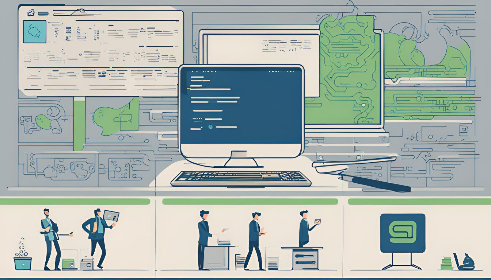

Sobre mí
¡Hola! Soy Alejandro, un profesional apasionado por la tecnología, la inteligencia artificial y el aprendizaje continuo.
Me especializo en Python, Machine Learning y soluciones basadas en la nube, con un enfoque particular en Computer Vision. He desarrollado diversas habilidades a través de proyectos autodidactas y cursos en línea. Siempre estoy en busca de nuevos desafíos y oportunidades para innovar y crecer en el mundo tecnológico.
Tech Stack


Proyectos
Aquí encontrarás algunos de los proyectos en los que he trabajado recientemente. Mantente atento, ya que seguiré actualizando esta sección con nuevos proyectos interesantes.